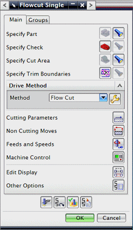

在工序导航器中，双击 FLOWCUT_SINGLE 以显示定制的对话框。

点击取消。
这种定制在您已经有英制以及公制模板，并且您想让对话框相匹配时特别有用，在定制英制部件之后，例如，打开公制部件并使用定制依据命令，然后浏览至相应的对象。
在工序导航器中，右击 FLOWCUT_SINGLE 并选择对象→定制依据。
在工作部件中的对象组的操作节点下方，选择 ZLEVEL_PROFILE_STEEP。
在复制定制依据组中，确保对象位于列表中选择的是模板。
点击确定。